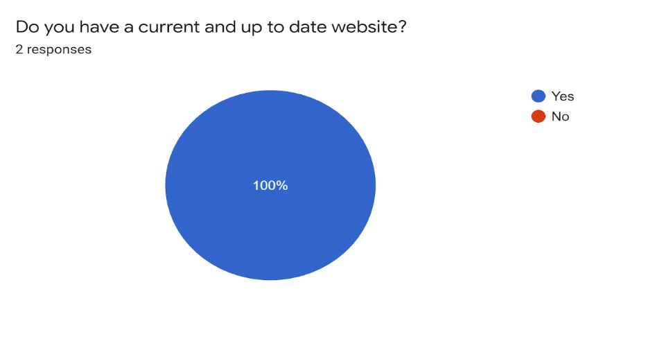

Survey is the elicitation technique used by Team 2 to retrieve data. Surveys are written sets of questions designed to gather information from any amount of participants. Unlike the questionnaire that is a one-purpose data collection, while surveys are used for the purpose of statistical analysis. In other words, surveys do not focus on an individual; surveys focus on trends that appear throughout a large geographical area. With that said, there are some general pros and cons to this specific elicitation technique.
In short, surveys are a great tool in order to accumulate a large amount of data from lots of people, but it should not be the only elicitation tool used. It can be a good technique to start an elicitation process, but again, should never be the sole technique.
Team 2 originally started the process of implementation with research. After recognizing the difference between surveys and questionnaires Team 2 found that surveys would be a good way to gather information from different businesses. A survey was created and sent to 20 various local businesses. Receiving information from businesses would help understand how the project could be used locally. Surveys are beneficial within this type of project, because they would allow you to collect data from many different businesses.
Gathering data from a variety of diverse people in a large geographical area with little cost, the time to complete can be very quick, the information gathered can be located in one place (Google Forms), hosts of the survey can view the data as each survey is completed. [1]
Questions cannot be clarified once the survey has been sent, questions are often close ended (does not allow participants to elaborate if needed), quantity of respondents may not be significant enough to represent a sufficient sample of data, surveys can be biased one way or another. [1]
Survey is a technique to gather information used in statistical analysis. In short, large amounts of data are gathered to discover underlying patterns and trends. This will give a better understanding of which data seems more related and how to implement that data in our future project.
Twenty companies were contacted or contact was attempted. Because of the specific focus of the app on the Rexburg, Idaho area, most of the companies contacted were in that area. Any others were within close proximity.
Data will be collected through the google forms and the raw data will be stored in excel sheet until further analysis is done.
These are the step by step description of our plan:
Brainstorming questions that are effective, essential and easy to understand. Local Business owners are the targeted audience. Anyone who has events meant for entertainment of some sort: Romance Theatre, Cinema 5, FatCats, Strike Zone Bowling Alley, Heber Hatchets Axe Throwing, etc. Questions need to be generalized for all, with enough specificity for the individual local business.
Google forms is a valid and extremely efficient choice. Google forms allows for quick and easy-to-create custom surveys with different types of questions: multiple choice, write-in, etc.
The plan will be revised by another team. Revision by another team will help keep the survey professional, efficient and focused on our goals.
Contacting local businesses and asking for their cooperation and participating in the survey. All team members will create a list of the best potential businesses that would benefit from this project. Each individual within the team will contact three to four of these businesses. We will tell them that this survey is for a class for college and that we are trying to build an application that would allow the businesses to receive more customers, or customers on a more frequent basis. Sending the survey with a thank you note attached will be an added measure to show appreciation and hopefully help them participate in the survey.
Gathering and analyzing the data. Follow up with businesses that have not yet taken the survey will be done by the Scrum Master. Analyzing the data retrieved from surveys will be done by the Functional Manager. The data collected will consist of businesses’ most profitable months, how often they would use the app, would they team up with other businesses and use the app and more. This information will allow a better product for the local businesses. We will access all survey data through a link within the survey. Google Sheets will be used to sort and analyze the data.
Reporting on the survey completion for every step will be included with the survey results. Upon completion, the report will be reviewed by the Quality Assurance and Chief Editor.
The only external tool used was Google Forms. We used Google Forms to conduct the survey.
As a brief overview of the data, companies surveyed would be generally interested in the types of services this app could provide. This includes companies that don’t hold activities per se. Of note is that March and December are commonly busy months. Additional data analysis is included further in this document.
Of the twenty companies with which contact was made or attempted, only two thus far have taken the survey. Thus, the analysis included herein should be taken with caution.
After Acquiring the data from the survey, the data showed that 50% of the businesses have activities available to the general public. All of the businesses that have completed the surveys have current and up to date websites. In order to see if the businesses would be willing to utilize the tools within the project, the survey found that only 50% of the businesses would be willing to use a virtual punch card. The businesses that we surveyed came from two different services that they offer, food service and Entertainment.


The product will require a way for the user to specify: